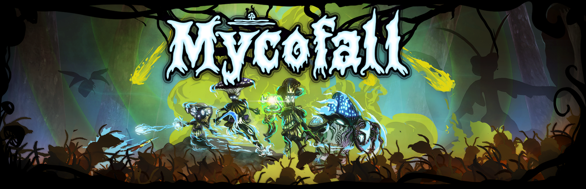
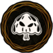
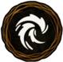
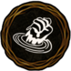
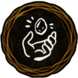
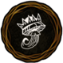
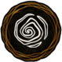
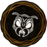

Mycofall – Wiki
Welcome to the official Mycofall Wiki! Choose a category below to explore characters, skills, enemies, and everything else about the game. Keep in mind that not all values may be correct and some information may no longer be up to date.
Game
Genre, setting, controls, and the core gameplay loop.
WIP
Characters
Playable characters, perk sets, traits, and level-up perks.

Skills
Active skills, morphs, evolutions, and targeting options.

Perks
Passive stat bonuses found in the shop between waves.

Resources
Mycelium, Biomass, Amber, and Meta Mushrooms.

Artifacts
Unique and stackable artifacts with passive effects.

Interactables
World events: heal bubbles, speed boosts, loot magnets, and more.

Enemies
All enemy types, their stats, behavior patterns, and boss encounters.
Maps
Playable maps and their unique features.
Achievements
In-game quests and Steam achievements.
Discord
Join our community, share feedback, and find other players.